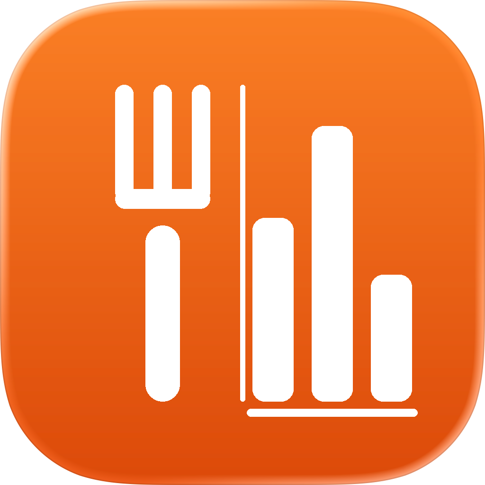
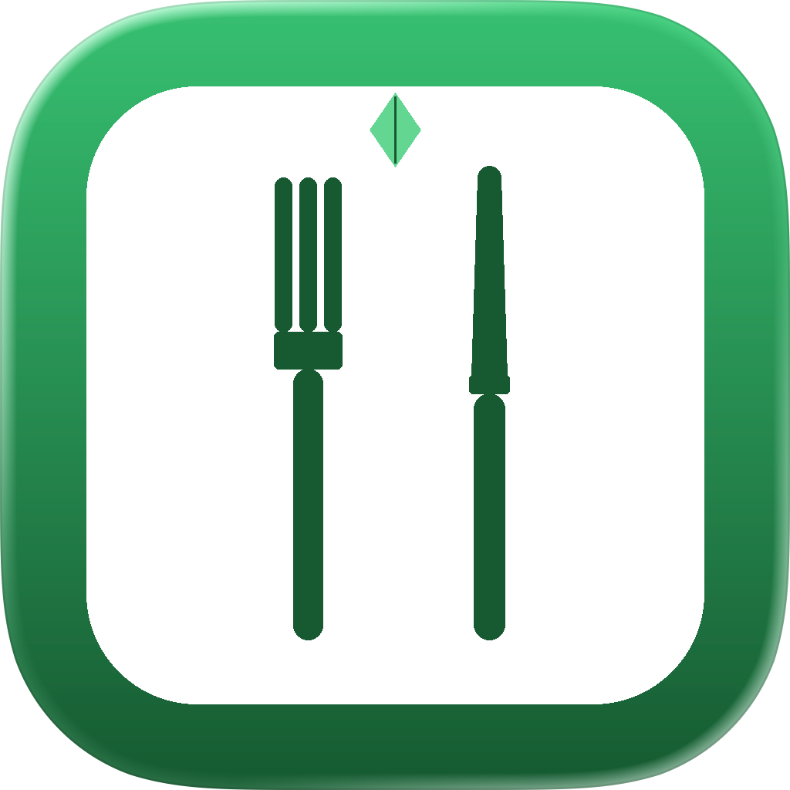
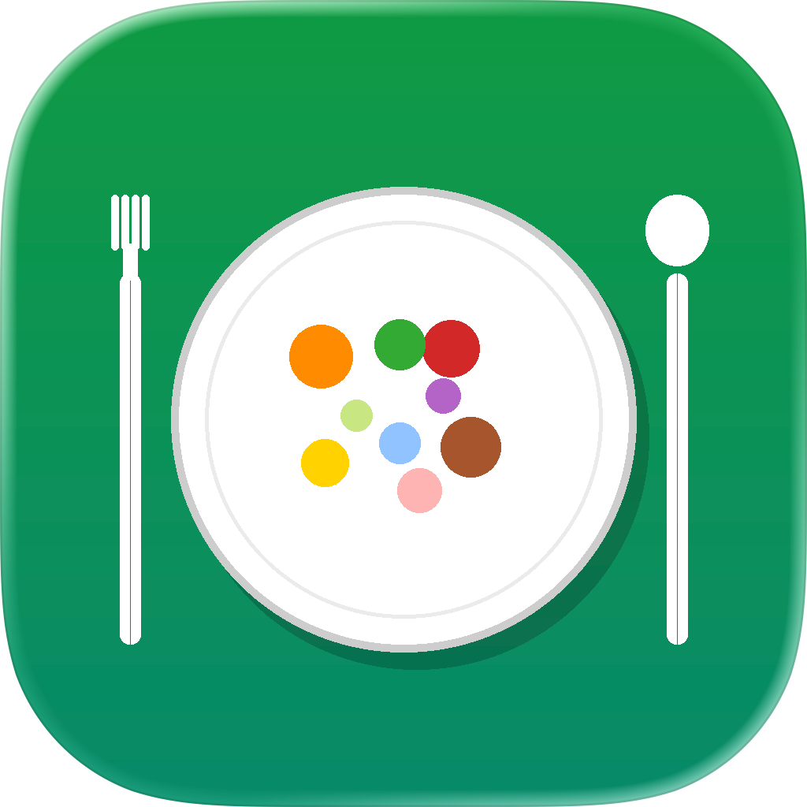

提供しているアプリ [cite: 1]
栄養士知識を活かして、栄養士向けのiPhone/iPadアプリをAppStoreで提供しています。[cite: 1]

みんなの食品成分表 [cite: 2]
iPhone / iPad

みんなの食事摂取基準2025 [cite: 3]
iPhone / iPad

みんなの献立作成 [cite: 4]
iPhone / iPad
みんなの特定保健指導 [cite: 5]
iPhone / iPad
みんなの健康診断 [cite: 6]
iPhone / iPad